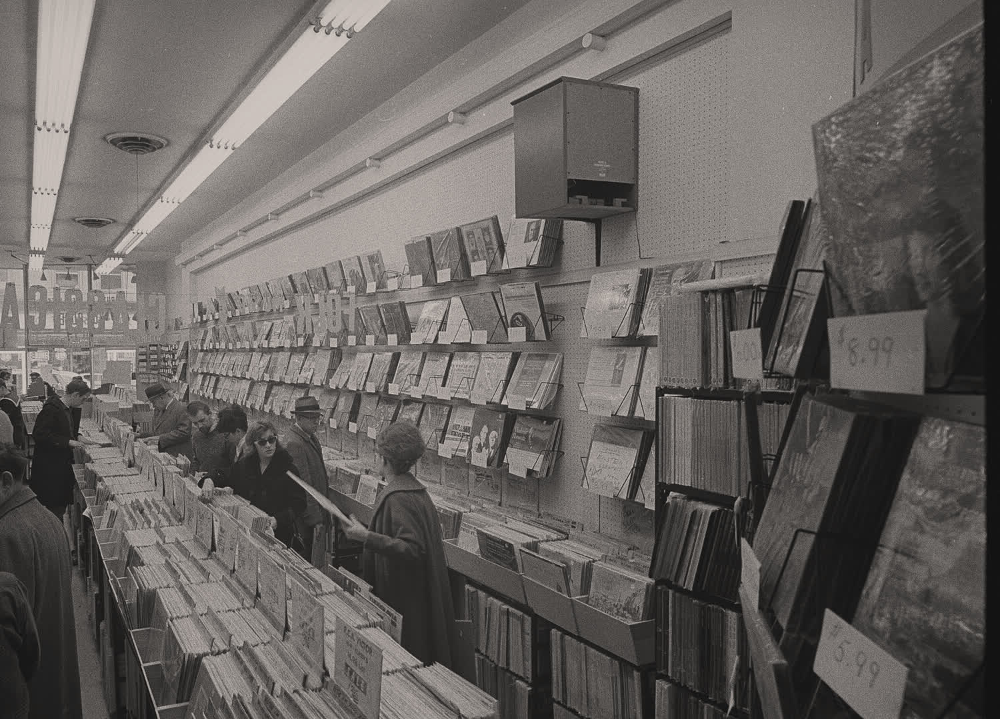
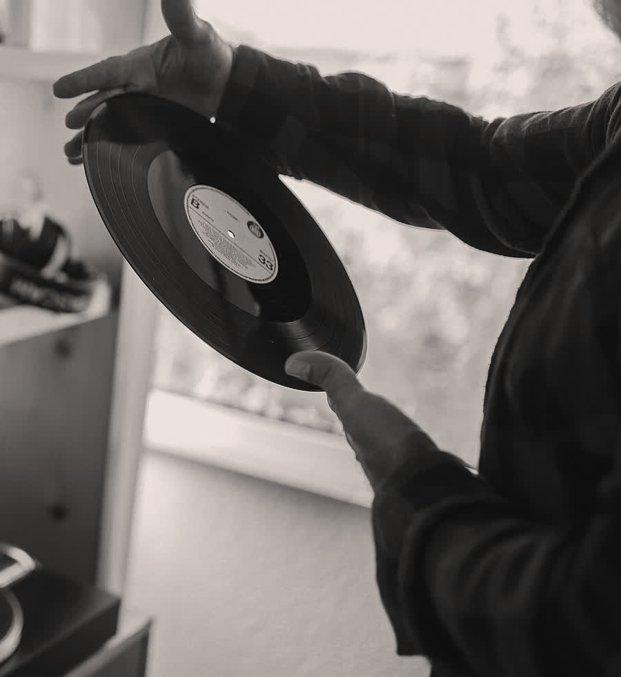

tu turno.
te sale un disco y suena. hojea tu caja y mételo donde crees que va, de lo más antiguo a lo más nuevo. si calza, se queda y suma.
Gasolina, Daddy Yankee
- 1968 Hey Jude
- 1994 Esperando nada
- 2002 A Dios le pido
- va acá: 2004
- 2016 La bicicleta
la metes en tu caja, sale el año y, si calza, suma 1 punto.

así se juega.
- suena una canción.
- la ubicas por año en tu línea.
- si alguien sabe más, tiene 10 segundos para decirlo.
- sale el año y la mesa reacciona.
cuida tus fichas.
- partes con 2.
y puedes juntar hasta 5, no más.
- nombrarla, +1.
dices la canción y el host te da una.
- saltar, 1.
te sacas de encima el disco que no conoces.
- robar, 1.
10 segundos para marcar otro lugar en la línea del rival.
se pelea en voz alta.
- eso es de los 80.
- ¿seguro?
- te la robo.
- ¡era del 94!
- ¡devuélvela!
de los 60 a hoy.
- 60s
Hey Jude The Beatles, 1968
- 70s
Hotel California Eagles, 1977
- 80s
El baile de los que sobran Los Prisioneros, 1986
- 90s
Esperando nada Nicole, 1994
- 00s
Gasolina Daddy Yankee, 2004
- 10s
La bicicleta Carlos Vives & Shakira, 2016
- 20s
DtMF Bad Bunny, 2025
cinco mazos.
Basehits de todos los tiemposla sabe tu tía
el mazo para cuando en la mesa hay de todas las edades.
Indie Vibespara la mesa entendidala sabe tu ex
aquí saber el año vale menos que haberla escuchado antes que los demás.
Pop LatinoMorat, Camilo, Greeicy, Yatrala sabe tu prima
se cantan todas, y eso no ayuda a saber de qué año son.
Chilede Violeta Parra a Cris MJla sabe tu papá
una línea entera de música de acá, y una discusión por cada disco.
Reggaetónde Gasolina a DtMFla sabe el más chico
parece fácil hasta que tienes que decir cuál salió primero.
una canción por letra.
rosco es el otro modo. suena solo en el celular del host, y él dice quién la sacó.
paralelo
todos a la vez. el host marca quién acertó y suma título y artista.
turnos
cada uno su rosco. aciertas y sigues, fallas y pasa el turno, o pasapalabra.

el host manda.
pausa entre turnos.
nadie saca disco hasta que él vuelva.
suena en todos los celulares.
lo decide él, y lo cambia en plena partida.
1 ficha por nombrarla.
el host la da cuando alguien dice la canción.
otra con esta mesa.
la revancha parte con la misma sala.
¿listos?
sin instalar nada, en el navegador del celular. de 2 a 8 jugadores. un host arma la sala y el resto entra con un código de 4 letras y su nombre. si alguien se cae, vuelve con su nombre y recupera su lugar.
armar una sala.